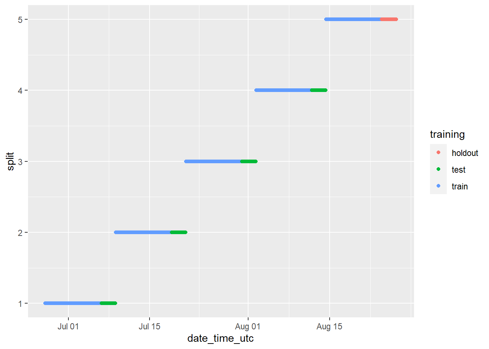

Section - 6 Model Validation Plan
Before making predictive models, we need to be careful in considering the ways by which we will be able to define a predictive model as being “good” or “bad”. We do not want to deploy a predictive model before having a good understanding of how we expect the model to perform once used in the real world. We will likely never get a 100% accurate representation of what the model will actually perform like in the real world without actually tracking those results over time, but there are ways for us to get a sense of whether something works or not ahead of time, as well as ensuring no blatant mistakes were made when training the models.
6.1 Testing Models
The simplest method of getting a sense of the efficacy of a predictive model is to take a majority of the data (usually around 80% of the observations) and assign it to be the train dataset, which the predictive models use to learn the statistical patterns in the data that can then be used to make predictions about the future. Using the rest of the data which has not yet been seen by the statistical models (referred to as the test dataset), we can assess if the statistical models work on the new data in the way that we would expect based on the results obtained on the train dataset. If the results are consistent between the two, this is a good sign.
6.2 Cross Validation
If we do this multiple times (a process referred to as cross validation) we have even more information at our disposal to understand how good the model is at predicting data it has not seen before. If the results on the test data are much worse than those obtained on the train data, this could be a sign of overfitting which means the model created overspecialized itself on the training data, and it is not very good at predicting new data because it learned the exact patterns of the training data instead of understanding the actual relationships between the different variables. Always beware of results that are too good to be true. It is more likely a mistake was made somewhere in the process. It is easy to make mistakes, which is why we need a good system to easily catch those mistakes. This is a longer discussion in its own right, but it is also important to consider how the data used to trained the model will be utilized in the context of making a new prediction; if a variable used to train the model is not available when making a new prediction, that is simply not going to work.
In our context, it is also important to consider the date/time aspect of the data. For example, if we used data later into the future for the train dataset relative to the test data, could this give the model more information that would actually be available to it when it is time to make a new prediction? It absolutely could because the columns with the lagged prices represent prices from the past, which could be “giving away the solution” to the test data in a way that could not be leveraged when it is time to make new predictions. Therefore, when splitting the data into train/test datasets we will keep track of when the data was collected using time aware cross validation.
6.2.1 Time Aware Cross Validation
Because of the issues just discussed above, we will need to make sure that the train data was always collected before the test data was. This is what we mean by “time aware”.
We will then use “cross validation” in the sense that we will create 5 different train/test splits to assess the accuracy of the models. From those 5, we will take the test split containing the most recent data, and consider this to be our holdout dataset. The holdout dataset represents the most recent version of the world that we can compare the performance of the models against, and will give us an additional way of assessing their accuracy.
This will leave us with:
5 train datasets to build predictive models from.
4 test datasets to assess the performance of the first 4 trained models against. Is the model able to predict price movements accurately and consistently when trained and tested on 4 independent subsets of the data?
1 holdout dataset to assess the performance of all 5 trained models. How accurate are the models at predicting the most recent subset of the data that we can assess?
The explanation above is really important to understand! The code and implementation of this step specifically not so much, however. Focus on understanding the idea conceptually as outlined above rather than understanding the code used below.
In the code below we are adding two new columns. First the split, which assigns each observation a number 1 through 5 of the cross validation split that the data belongs to based on when it was collected. Then the training column, which identifies each row as being part of the train, test, or holdout data of the given split.
We will not walk through the steps of the code below in detail outside of the comments left throughout the code because we would rather focus our attention on the conceptual understanding for this step as outlined above. There are many ways of doing time aware cross validation, but none worked particularly well for the way we wanted to outline the next sections, so we made our own and it’s not important to understand how this is working, but it is also not that complex and uses the same tools used up to this point in this section. See this section of the high-level tutorial for an approach that can be used on datasets outside of the one used in this tutorial, and is compatible with the tools used in the predictive modeling section of both versions.
# Remove rows with null date_time_utc to exclude missing data from next steps
cryptodata <- drop_na(cryptodata, date_time_utc)
# Counts by symbol
cryptodata <- mutate(group_by(cryptodata, symbol), tot_rows = n())
# Add row index by symbol
cryptodata <- mutate(arrange(cryptodata, date_time_utc), row_id = seq_along(date_time_utc))
# Calculate what rows belong in the first split
cryptodata <- cryptodata %>% mutate(split_rows_1 = as.integer(n()/5),
split_rows_2 = as.integer(split_rows_1*2),
split_rows_3 = as.integer(split_rows_1*3),
split_rows_4 = as.integer(split_rows_1*4),
split_rows_5 = as.integer(split_rows_1*5))
# Now calculate what split the current row_id belongs into
cryptodata <- mutate(cryptodata,
split = case_when(
row_id <= split_rows_1 ~ 1,
row_id <= split_rows_2 ~ 2,
row_id <= split_rows_3 ~ 3,
row_id <= split_rows_4 ~ 4,
row_id > split_rows_4 ~ 5))
# Now figure out train/test groups
cryptodata <- cryptodata %>% mutate(train_rows_1 = (as.integer(n()/5))*0.8,
test_rows_1 = train_rows_1 + (as.integer(n()/5))*0.2,
train_rows_2 = test_rows_1 + train_rows_1,
test_rows_2 = train_rows_2 + (as.integer(n()/5))*0.2,
train_rows_3 = test_rows_2 + train_rows_1,
test_rows_3 = train_rows_3 + (as.integer(n()/5))*0.2,
train_rows_4 = test_rows_3 + train_rows_1,
test_rows_4 = train_rows_4 + (as.integer(n()/5))*0.2,
train_rows_5 = test_rows_4 + train_rows_1,
test_rows_5 = train_rows_5 + (as.integer(n()/5))*0.2)
# Now assign train/test groups
cryptodata <- mutate(cryptodata,
training = case_when(
row_id <= train_rows_1 ~ 'train',
row_id <= test_rows_1 ~ 'test',
row_id <= train_rows_2 ~ 'train',
row_id <= test_rows_2 ~ 'test',
row_id <= train_rows_3 ~ 'train',
row_id <= test_rows_3 ~ 'test',
row_id <= train_rows_4 ~ 'train',
row_id <= test_rows_4 ~ 'test',
row_id <= train_rows_5 ~ 'train',
row_id > train_rows_5 ~ 'holdout'))
# Remove all columns that are no longer needed now
cryptodata <- select(cryptodata, -(tot_rows:test_rows_5), -(trade_usd_1:trade_usd_5),
-(ask_1_price:bid_5_quantity), -pair, -quote_currency,
-pkDummy, -pkey, -ts_index, split)Our data now has the new columns training (train, test or holdout) and split (numbers 1-5) added to it, let’s take a look at the new columns:
## # A tibble: 250,125 x 3
## # Groups: symbol [157]
## symbol training split
## <chr> <chr> <dbl>
## 1 BTC train 1
## 2 ETH train 1
## 3 EOS train 1
## 4 LTC train 1
## 5 BSV train 1
## 6 ADA train 1
## 7 ZEC train 1
## 8 HT train 1
## 9 TRX train 1
## 10 KNC train 1
## # ... with 250,115 more rowsNotice that even though we left symbol variables out of our selection, but because it is part of the way we grouped our data, it was added back in with the message “Adding missing grouping variables symbol”. The data is tied to its groupings when performing all operations until we use ungroup() to undo them.
Let’s add the new split column to the way the data is grouped:
The new field split, helps us split the data into 5 different datasets based on the date, and contains a number from 1-5. The new field training flags the data as being part of the train dataset, or the test, or the holdout (for the first split) dataset for each of the 5 splits/datasets.
Running the same code as before with tail() added, we can see rows associated with the test data of the 5th split (again remember, each of the 5 splits has a training and testing dataset):
## # A tibble: 6 x 3
## # Groups: symbol, split [6]
## symbol training split
## <chr> <chr> <dbl>
## 1 RLC holdout 5
## 2 SXP holdout 5
## 3 HFT holdout 5
## 4 BAN holdout 5
## 5 ETHW holdout 5
## 6 LAZIO holdout 5The easiest way to understand these groupings, is to visualize them:
groups_chart <- ggplot(cryptodata,
aes(x = date_time_utc, y = split, color = training)) +
geom_point()
# now show the chart we just saved:
groups_chart
The chart above looks strange because it includes all cryptocurrencies when they are treated independently. We can view the results for the BTC cryptocurrency only by running the same code as above, but instead of visualizing the dataset in its entirety, filtering the data using filter(cryptodata, symbol == "BTC"), which will give us a much better impression of the breakdown that has been created:
ggplot(filter(cryptodata, symbol == 'BTC'),
aes(x = date_time_utc,
y = split,
color = training)) +
geom_point()
We can check on the groupings for each cryptocurrency by animating the cryptodata object:
animated_chart <- groups_chart +
transition_states(symbol) +
ggtitle('Now showing: {closest_state}')
# show the new animated chart
animate(animated_chart, fps = 2)
It can be a bit hard to tell how many data points there are because they end up looking like lines. Let’s change the plot to use geom_jitter() instead of geom_point(), which will manually offset the points and give us a better impression of how many data points there are:
animated_chart <- animated_chart +
geom_jitter()
# show the new animated chart
animate(animated_chart, fps = 2)
6.3 Fix Data by Split
Now that we have split the data into many different subsets, those subsets themselves may have issues that prevent the predictive models from working as expected.
6.3.1 Zero Variance
One of the first models we will make in the next section is a simple linear regression model. The regular R function for this will not work if the data contains any columns that have zero variance, meaning the value of the column never changes throughout the data being given to the model. Therefore, let’s fix any issues relating to zero variance columns in any dataset before we change the structure of the data in the step after this one.
First let’s change the grouping of the data. We are interested in calculating the zero variance based on the symbol, split, and training fields:
Now let’s create a new object called find_zero_var which shows the value of the minimum standard deviation across all columns and calculated based on the grouping of symbol, split and train:
find_zero_var <- select(mutate(cryptodata, min_sd = min(sd(price_usd, na.rm=T),
sd(target_price_24h, na.rm=T),
sd(lagged_price_1h, na.rm=T),
sd(lagged_price_2h, na.rm=T),
sd(lagged_price_3h, na.rm=T),
sd(lagged_price_6h, na.rm=T),
sd(lagged_price_12h, na.rm=T),
sd(lagged_price_24h, na.rm=T))), min_sd)
# Show data
find_zero_var## # A tibble: 250,125 x 4
## # Groups: symbol, split, training [1,570]
## symbol split training min_sd
## <chr> <dbl> <chr> <dbl>
## 1 BTC 1 train 344.
## 2 ETH 1 train 34.6
## 3 EOS 1 train 0.0238
## 4 LTC 1 train 4.25
## 5 BSV 1 train 0.967
## 6 ADA 1 train 0.0122
## 7 ZEC 1 train 1.02
## 8 HT 1 train 0.212
## 9 TRX 1 train 0.000986
## 10 KNC 1 train 0.0308
## # ... with 250,115 more rowsNext let’s get to a list of cryptocurrency symbols where the minimum standard deviation across all columns for all splits of the data is 0, which is the list of cryptocurrencies we want to later remove from the data:
minimum_sd <- filter(distinct(mutate(group_by(ungroup(find_zero_var), symbol),
min_sd = min(min_sd, na.rm=T)), min_sd),min_sd < 0.0001)$symbol
# Show result
minimum_sd## [1] "SEELE" "CKB" "BRD" "DENT" "LEO" "RCN" "APPC" "CND"
## [9] "SMART" "JASMY" "EKO" "CVT" "ABBC" "SLP" "WMT" "EDGT"
## [17] "JAM" "CEEK" "BTRST" "MAID" "SPELL" "PLC" "BZRX" "SPI"
## [25] "NFT" "GODS" "USDD" "NXT" "TORN" "AMB" "LUNC" "MESH"
## [33] "STETH" "ZYN" "XCN" "XPNT" "G999" "SMT" "BCUG" "DFC"
## [41] "RLY" "MC" "SBD" "BDX" "TRIBE" "GRIN" "FEI" "CLO"
## [49] "VGX" "RENBTC" "AKRO" "CRPT" "MIR" "NCT" "WLXT" "HFT"
## [57] "ORBS" "LEVL" "DEG" "RGT" "ETP" "HELIOS" "BAN" "ZKS"
## [65] "USG" "SWFTC" "CAPA" "MBL"Now we can remove these symbols from appearing in the dataset:
In the code above we match all rows where the symbol is part of the minimum_sd object with the list of cryptocurrency symbols to remove from the data, and we then negate the selection using the ! operator to only keep rows with symbols not in the list we found.
6.4 Nest data
The underlying data structure we have been using up to this point is that of a data frame. This data type supports values of many kinds inside of its cells, so far we have seen things like numbers, strings, and dates, but we can also store an entire other data frame as a value. Doing this is called nesting the data.
The steps taken below and in the predictive modeling section that comes later use a similar approach to the work published by Hadley Wickham on the subject (Wickham and Grolemund 2017).
Here is an example of what happens when we nest() the data:
## # A tibble: 890 x 4
## # Groups: symbol, training, split [890]
## symbol training split data
## <chr> <chr> <dbl> <list>
## 1 BTC train 1 <tibble [267 x 11]>
## 2 ETH train 1 <tibble [271 x 11]>
## 3 EOS train 1 <tibble [268 x 11]>
## 4 LTC train 1 <tibble [270 x 11]>
## 5 BSV train 1 <tibble [271 x 11]>
## 6 ADA train 1 <tibble [271 x 11]>
## 7 ZEC train 1 <tibble [271 x 11]>
## 8 HT train 1 <tibble [268 x 11]>
## 9 TRX train 1 <tibble [270 x 11]>
## 10 KNC train 1 <tibble [271 x 11]>
## # ... with 880 more rowsWe will begin by creating the new column containing the nested train data. Some additional steps were added to ensure the integrity of the data before we start training it, but these are not material outside of the things we have already discussed up to this point. Try to focus on the conceptual idea that we are creating a new dataset grouped by the symbol, training and split columns. As a first step, we are creating a new dataframe called cryptodata_train grouped by the symbol and split columns with the nested dataframes in the new train_data column:
cryptodata_train <- rename(nest(filter(cryptodata,
training=='train')),
train_data = 'data')
# Now remove training column
cryptodata_train <- select(ungroup(cryptodata_train,
training),
-training)
# Fix issues with individual groups of the data
cryptodata_train$train_data <- lapply(cryptodata_train$train_data, na.omit)
# First add new column with nrow of train dataset
cryptodata_train <- group_by(ungroup(mutate(rowwise(cryptodata_train),
train_rows = nrow(train_data))),
symbol, split)
# Remove all symbols where their train data has less than 20 rows at least once
symbols_rm <- unique(filter(cryptodata_train,
split < 5, train_rows < 20)$symbol)
# Remove all data relating to the symbols found above
cryptodata_train <- filter(cryptodata_train,
! symbol %in% symbols_rm) # ! is to make %not in% operator
# Drop train_rows column
cryptodata_train <- select(cryptodata_train, -train_rows)
# Show results
cryptodata_train## # A tibble: 440 x 3
## # Groups: symbol, split [440]
## symbol split train_data
## <chr> <dbl> <list>
## 1 BTC 1 <tibble [195 x 11]>
## 2 ETH 1 <tibble [199 x 11]>
## 3 EOS 1 <tibble [196 x 11]>
## 4 LTC 1 <tibble [198 x 11]>
## 5 BSV 1 <tibble [199 x 11]>
## 6 ADA 1 <tibble [199 x 11]>
## 7 ZEC 1 <tibble [199 x 11]>
## 8 HT 1 <tibble [196 x 11]>
## 9 TRX 1 <tibble [198 x 11]>
## 10 KNC 1 <tibble [199 x 11]>
## # ... with 430 more rowsNow let’s repeat the same process but on the test data to create the cryptodata_test object:
cryptodata_test <- select(rename(nest(filter(cryptodata,
training=='test')),
test_data = 'data'),
-training)
# Now remove training column
cryptodata_test <- select(ungroup(cryptodata_test,
training),
-training)
# Show nested data
cryptodata_test## # A tibble: 356 x 3
## # Groups: symbol, split [356]
## symbol split test_data
## <chr> <dbl> <list>
## 1 ALCX 1 <tibble [47 x 11]>
## 2 OXT 1 <tibble [56 x 11]>
## 3 GAS 1 <tibble [60 x 11]>
## 4 WAXP 1 <tibble [66 x 11]>
## 5 DERC 1 <tibble [66 x 11]>
## 6 BTG 1 <tibble [67 x 11]>
## 7 BTC 1 <tibble [67 x 11]>
## 8 XMR 1 <tibble [65 x 11]>
## 9 DYDX 1 <tibble [67 x 11]>
## 10 EOS 1 <tibble [67 x 11]>
## # ... with 346 more rowsAs well as the holdout data to create the cryptodata_holdout object:
cryptodata_holdout <- rename(nest(filter(cryptodata,
training=='holdout')),
holdout_data = 'data')
# Remove split and training columns from holdout
cryptodata_holdout <- select(ungroup(cryptodata_holdout, split, training),
-split, -training)
# Show nested data
cryptodata_holdout## # A tibble: 89 x 2
## # Groups: symbol [89]
## symbol holdout_data
## <chr> <list>
## 1 BTG <tibble [68 x 11]>
## 2 ARNM <tibble [49 x 11]>
## 3 SXP <tibble [69 x 11]>
## 4 EOS <tibble [71 x 11]>
## 5 XMR <tibble [69 x 11]>
## 6 LTC <tibble [72 x 11]>
## 7 TRX <tibble [72 x 11]>
## 8 ZRX <tibble [72 x 11]>
## 9 DOT <tibble [72 x 11]>
## 10 ATA <tibble [72 x 11]>
## # ... with 79 more rows6.4.1 Join Results
Now we can take the results that we grouped for each subset cryptodata_train, cryptodata_test, and cryptodata_holdout, and we can join the results to have all three new columns train_data, test_data, and holdout_data in a single new dataframe, which we will call cryptodata_nested:
# Join train and test
cryptodata_nested <- left_join(cryptodata_train, cryptodata_test, by = c("symbol", "split"))
# Show new data
cryptodata_nested## # A tibble: 440 x 4
## # Groups: symbol, split [440]
## symbol split train_data test_data
## <chr> <dbl> <list> <list>
## 1 BTC 1 <tibble [195 x 11]> <tibble [67 x 11]>
## 2 ETH 1 <tibble [199 x 11]> <tibble [68 x 11]>
## 3 EOS 1 <tibble [196 x 11]> <tibble [67 x 11]>
## 4 LTC 1 <tibble [198 x 11]> <tibble [68 x 11]>
## 5 BSV 1 <tibble [199 x 11]> <tibble [68 x 11]>
## 6 ADA 1 <tibble [199 x 11]> <tibble [68 x 11]>
## 7 ZEC 1 <tibble [199 x 11]> <tibble [68 x 11]>
## 8 HT 1 <tibble [196 x 11]> <tibble [68 x 11]>
## 9 TRX 1 <tibble [198 x 11]> <tibble [68 x 11]>
## 10 KNC 1 <tibble [199 x 11]> <tibble [68 x 11]>
## # ... with 430 more rowsThe by argument used above defines the key to use to join the data by, in this case the cryptocurrency symbol, as well as the specific split.
Next, let’s join the new dataframe we just created cryptodata_nested to the holdout data as well and add the holdout_data column. In this case, we will want to keep the holdout data consistent for all 5 splits of a cryptocurrency instead of matching the data to a particular split; the models trained on the data from splits 1 through 5 will each have a different test dataset, but all 5 models will then be tested against the same holdout. Therefore, this time in the join() performed below we are only supplying the cryptocurrency symbol for the by parameter:
Now we have our completed dataset that will allow us to iterate through each option and create many separate models as was discussed throughout this section:
## # A tibble: 440 x 5
## # Groups: symbol, split [440]
## symbol split train_data test_data holdout_data
## <chr> <dbl> <list> <list> <list>
## 1 BTC 1 <tibble [195 x 11]> <tibble [67 x 11]> <tibble [70 x 11]>
## 2 ETH 1 <tibble [199 x 11]> <tibble [68 x 11]> <tibble [68 x 11]>
## 3 EOS 1 <tibble [196 x 11]> <tibble [67 x 11]> <tibble [71 x 11]>
## 4 LTC 1 <tibble [198 x 11]> <tibble [68 x 11]> <tibble [72 x 11]>
## 5 BSV 1 <tibble [199 x 11]> <tibble [68 x 11]> <tibble [68 x 11]>
## 6 ADA 1 <tibble [199 x 11]> <tibble [68 x 11]> <tibble [68 x 11]>
## 7 ZEC 1 <tibble [199 x 11]> <tibble [68 x 11]> <tibble [68 x 11]>
## 8 HT 1 <tibble [196 x 11]> <tibble [68 x 11]> <tibble [68 x 11]>
## 9 TRX 1 <tibble [198 x 11]> <tibble [68 x 11]> <tibble [72 x 11]>
## 10 KNC 1 <tibble [199 x 11]> <tibble [68 x 11]> <tibble [68 x 11]>
## # ... with 430 more rowsMove on to the next section ➡️ to build the predictive models using the methodology discussed in this section.
References
Wickham, Hadley, and Garrett Grolemund. 2017. R for Data Science: Import, Tidy, Transform, Visualize, and Model Data. 1st ed. O’Reilly Media, Inc.